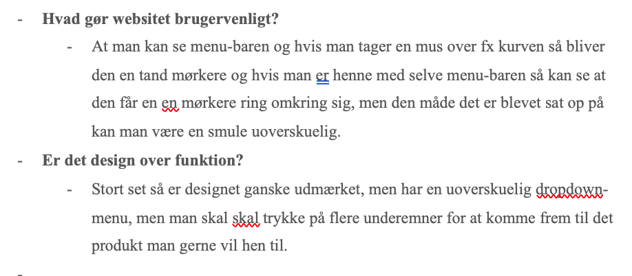

Gestaltlovene
De fem vigtig gestaltlove, handler om når et menneske ser på noget der har en kompleks kombination af visuelle elementer, det kan være et maleri eller et website at man først ser hele værket inden man ser detaljerne. Denne form for princip er at mennesket ser helheden før de individuelle dele, dette er sammenfattet altså de såkaldte gestaltlove.
Disse gestaltlove er med til at beskrive nogle generelle principper, for i at mennesket opfatter de visuelle objekter i forhold til hinanden. I forbindelse med dette, så er der også tale om en slags for naturlove, da menneskets opfattelsesevne som er afgørende for at kunne arbejde med den visuelle formidling. Når der er tale om interfacedesign, så det vigtigt at vide om de 5 gestalove.
Designprincipper.
Dette er eksempler på hvad designprincipper kan gå ud på. Fx man tage to gode websites og to dårlige websites. Her går det ud på at man udvælger nogle websites og man så skal finde ud af hvilke begreber man kan bruge for at vide mere om websites.

Inden for design er der den visuelle hierarki, her er det med hvordan strukturen er, da det er vigtigt at det vigtigste information træder mere frem end den mindre vigtige. Derudover skal hver enkelte elements visuelle fremtræden understøtte funktionerne, som fx overskrifter skal lige overskrifter osv. Med andre ord, så skal brugeren udlede elementernes placering i det visuelle hierarki ud fra det visuelle fremtræden.
Sagt på den åde, så skal dey visulle give en bruger den information om hvor vigtigt et element er, og dens relation med andre elementer på siden.
Inden for elementernes visuelle hierarki og relation, er der et væld af faktorer, som er med til at at påvirke menneskets opfattelse omkring denne hierarki.
Peer to peer, går ud på at man laver et produkt, hvor man benytter sig af både Photoshop og Illustrator.
Dette er en opgave hvor man skal lave en plakat og benytter sig af nogle forskellige fremgangsmåder. Derudover skal man følge seks punkter og til sidst fortæller lidt om ens tanker var bag denne opgavve. Man skulle også tænke over hvilke farver og skrifttype der skulle bruges, altså give sin plakat en titel.
I denne opgave måtte man også bruge billeder fra en side der hedder colourbox, grunden til dette er fordi det er en lovlig side som denne uddannelse benytter sig af.
Den første lov er om nærhed, det er når elementer er blevet placeret tæt på hinanden, at de vil opfattet som en reletion til hinanden, på engelsk betegnelse proximity. Den anden lov er om lighed, her er det at elementerne ser ens ud, det kan være farve eller størrelser, engelsk betegnelse er similarity. Den tredje lov er kontinuitet, her er det når elementer er blevet placeret så de er med til at danne linjer eller kurver på engelsk good continuation. Den fjerde lov er om lukkethed, hvilket betyder at elementerne er lukket ind sammen i en indramning, på engelsk kaldet common region. Den sidste lov er figurdannelse, her er det hvor elementerne er separeteret, men kan opfattes som én samlet figur, engelsk betegnelse closure.